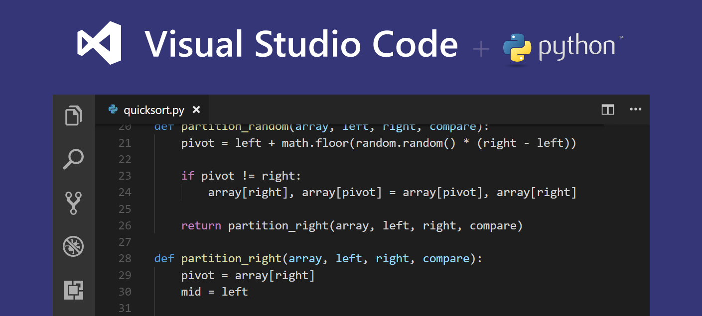
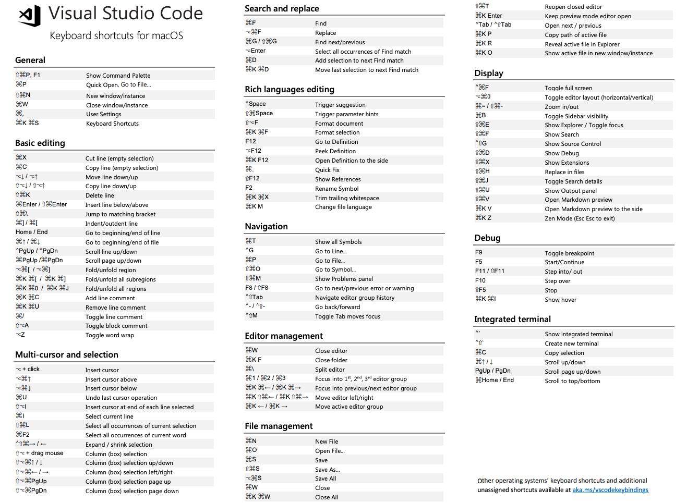

微软公司也利用Electron做了一个跨平台的编辑器，叫做Visual Studio Code。最近我试用了一段时间，发现非常好用，基本上安装一些比较知名的插件之后就能开始干活了，非常适合新手使用。虽然它的社区远远不如Atom社区活跃，插件也不是很丰富，但是易用性方面非常好。官网快捷键链接地址


1. 全局操作
| 编号 |
快捷键 |
解释说明 |
| 1 |
Command + p |
快速打开文件 |
| 2 |
Command + Shift + p / F1 |
显示命令面板 |
| 3 |
Command + Shift + n |
打开新窗口 |
| 4 |
Command + w |
关闭窗口 |
| 5 |
Command + , |
打开用户设置 |
| 6 |
Command + k Command + s |
快捷键列表 |
| 7 |
Ctrl + Shift + ? |
界面搜索常见快捷键 |
2. 基本操作
| 编号 |
快捷键 |
解释说明 |
| 1 |
Command + x |
剪切(中文本的情况下剪切光标所在行) |
| 2 |
Command + c |
复制(未选中文本的情况下，复制光标所在行) |
| 3 |
Command + / |
添加、移除行注释 |
| 4 |
Option + Shift + a |
添加、移除块注释 |
| 5 |
Option + z |
自动换行、取消自动换行 |
| 6 |
Option + Up |
将当前行向上移动行 |
| 7 |
Option + Down |
将当前行向下移动行 |
| 8 |
Option + Shift + Up |
将当前行向上复制一行 |
| 9 |
Option + Shift + Down |
将当前行向下复制一行 |
| 10 |
Command + Shift + k |
将当前行删除 |
| 11 |
Command + Enter |
下一行插入内容 |
| 12 |
Command + Shift + Enter |
上一行插入内容 |
| 13 |
Command + Shift + \ |
跳转到匹配的括号 |
| 14 |
Command + [ |
减少缩进 |
| 15 |
Command + ] |
增加缩进 |
| 16 |
Command + Up |
跳转至文件开头 |
| 17 |
Command + Down |
跳转至文件结尾 |
| 18 |
Ctrl + PgUp |
按行向上滚动 |
| 19 |
Ctrl + PgDown |
按行向下滚动 |
| 20 |
Command + PgUp |
按屏向上滚动 |
| 21 |
Command + PgDown |
按屏向下滚动 |
| 22 |
Command + Shift + [ |
显示左边的打开文件 |
| 23 |
Command + Shift + ] |
显示右边的打开文件 |
| 24 |
Command + k Command + c |
添加行注释 |
| 25 |
Command + k Command + u |
移除行注释 |
| 26 |
Command + Option + [ |
折叠部分子代码块 |
| 27 |
Command + Option + ] |
展开部分子代码块 |
| 28 |
Command + k Command + 0 |
折叠全部代码块 |
| 29 |
Command + k Command + j |
展开全部代码块 |
| 30 |
Command + k Command + c |
添加行注释 |
| 31 |
Command + k Command + u |
移除行注释 |
3. 多光标与选择
| 编号 |
快捷键 |
解释说明 |
| 1 |
Option + 点击 |
插入多个光标 |
| 2 |
Command + Option + Up |
向上插入光标 |
| 3 |
Command + Option + Down |
向下插入光标 |
| 4 |
Command + u |
撤销上一个光标操作 |
| 5 |
Option + Shift + i |
在所选行的行尾插入光标 |
| 6 |
Command + i |
选中当前行 |
| 7 |
Command + Shift + l |
选中所有与当前选中内容相同部分 |
| 8 |
Command + F2 |
选中所有与当前选中单词相同的单词 |
| 9 |
Command + Ctrl + Shift + Left |
折叠选中 |
| 10 |
Command + Ctrl + Shift + Right |
展开选中 |
| 11 |
Option + Shift + 拖动鼠标 |
选中代码块 |
| 12 |
Command + Shift + Option + Up |
列选择 向上 |
| 13 |
Command + Shift + Option + Down |
列选择 向下 |
| 14 |
Command + Shift + Option + Left |
列选择 向左 |
| 15 |
Command + Shift + Option + Right |
列选择 向右 |
| 16 |
Command + Shift + Option + PgUp |
列选择 向上翻页 |
| 17 |
Command + Shift + Option + PgDown |
列选择 向下翻页 |
4. 查找替换
| 编号 |
快捷键 |
解释说明 |
| 1 |
Command + f |
查找 |
| 2 |
Command + Option + f |
替换 |
| 3 |
Command + g |
查找下一个 |
| 4 |
Command + Shift + g |
查找上一个 |
| 5 |
Option + Enter |
选中所有匹配项 |
| 6 |
Command + d |
向下选中相同内容 |
| 7 |
Command + k Command + d |
移除前一个向下选中相同内容 |
5. 进阶
| 编号 |
快捷键 |
解释说明 |
| 1 |
Ctrl + Space |
打开建议 |
| 2 |
Command + Shift + Space |
参数提示 |
| 3 |
Tab Emmet |
插件缩写补全 |
| 4 |
Option + Shift + f |
格式化 |
| 5 |
Command + k Command + f |
格式化选中内容 |
| 6 |
F12 |
跳转到声明位置 |
| 7 |
Option + F12 |
查看具体声明内容 |
| 8 |
Shift + F12 |
显示引用 |
| 0 |
Command + k F12 |
分屏查看具体声明内容 |
| 10 |
Command + . |
快速修复 |
| 11 |
F2 |
重命名符号 |
| 12 |
Command + Shift + . |
查看代码定义段 |
| 13 |
Command + Shift + , |
数字不断增加 |
| 14 |
Command + k Command + x |
删除行尾多余空格 |
| 15 |
Command + k m |
更改文件语言 |
6. 导航
| 编号 |
快捷键 |
解释说明 |
| 1 |
Command + t |
显示所有符号 |
| 2 |
Ctrl + g |
跳转至某行 |
| 3 |
Command + p |
跳转到某个文件 |
| 4 |
Command + Shift + o |
跳转到某个符号 |
| 5 |
Command + Shift + m |
打开问题面板 |
| 6 |
F8 |
下一个错误或警告位置 |
| 7 |
Shift + F8 |
上一个错误或警告位置 |
| 8 |
Ctrl + Shift + Tab |
编辑器历史记录 |
| 9 |
Ctrl + - |
后退 |
| 10 |
Ctrl + Shift + - |
前进 |
| 11 |
Ctrl + Shift + m Tab |
切换焦点 |
7. 编辑器管理
| 编号 |
快捷键 |
解释说明 |
| 1 |
Command + w |
关闭编辑器 |
| 2 |
Command + k f |
关闭文件夹 |
| 3 |
Command + \ |
编辑器分屏 |
| 4 |
Command + 1 |
切换到第一分组 |
| 5 |
Command + 2 |
切换到第二分组 |
| 6 |
Command + 3 |
切换到第三分组 |
| 7 |
Command + k Command + Left |
切换到上一分组 |
| 8 |
Command + k Command + Right |
切换到下一分组 |
| 9 |
Command + k Command + Shift + Left |
左移编辑器 |
| 10 |
Command + k Command + Shift + Right |
右移编辑器 |
| 11 |
Command + k Left |
激活左侧编辑组 |
| 12 |
Command + k Right |
激活右侧编辑组 |
8. 文件管理
| 编号 |
快捷键 |
解释说明 |
| 1 |
Command + n |
新建文件 |
| 2 |
Command + o |
打开文件 |
| 3 |
Command + s |
保存文件 |
| 4 |
Command + Shift + s |
另存为 |
| 5 |
Command + Option + s |
全部保存 |
| 6 |
Command + w |
关闭 |
| 7 |
Command + k Command + w |
全部关闭 |
| 8 |
Command + Shift + t |
重新打开被关闭的编辑器 |
| 9 |
Command + k Enter |
保持打开 |
| 10 |
Ctrl + Tab |
打开下一个 |
| 11 |
Ctrl + Shift + Tab |
打开上一个 |
| 12 |
Command + k p |
复制当前文件路径 |
| 13 |
Command + k r |
在资源管理器中查看当前文件 |
| 14 |
Command + k o |
新窗口打开当前文件 |
9. 显示
| 编号 |
快捷键 |
解释说明 |
| 1 |
Command + Ctrl + f |
全屏、退出全屏 |
| 2 |
Command + Option + 0 |
切换编辑器分屏方式（横、竖） |
| 3 |
Command + + |
放大 |
| 4 |
Command + - |
缩小 |
| 5 |
Command + b |
显示、隐藏侧边栏 |
| 6 |
Command + Shift + e |
显示资源管理器或切换焦点 |
| 7 |
Command + Shift + f |
显示搜索框 |
| 8 |
Ctrl + Shift + g |
显示 Git 面板 |
| 9 |
Command + Shift + d |
显示调试面板 |
| 10 |
Command + Shift + x |
显示插件面板 |
| 11 |
Command + Shift + h |
全局搜索替换 |
| 12 |
Command + Shift + j |
显示、隐藏高级搜索 |
| 13 |
Command + Shift + c |
打开新终端 |
| 14 |
Command + Shift + u |
显示输出面板 |
| 15 |
Command + Shift + v |
Markdown 预览窗口 |
| 16 |
Command + k v |
分屏显示 Markdown 预览窗口 |
10. 调试
| 编号 |
快捷键 |
解释说明 |
| 1 |
F9 |
设置 或 取消断点 |
| 2 |
F5 |
开始 或 继续 |
| 3 |
F11 |
进入 |
| 4 |
Shift + F11 |
跳出 |
| 5 |
F10 |
跳过 |
| 6 |
Command + K Command + I |
显示悬停信息 |
11. 集成终端
| 编号 |
快捷键 |
解释说明 |
| 1 |
Ctrl + ~ |
显示终端 |
| 2 |
Ctrl + Shift + ~ |
新建终端 |
| 3 |
Command + Up |
向上滚动 |
| 4 |
Command + Down |
向下滚动 |
| 5 |
PgUp |
向上翻页 |
| 6 |
PgDown |
向下翻页 |
| 7 |
Command + Home |
滚动到顶部 |
| 8 |
Command + End |
滚动到底部 |